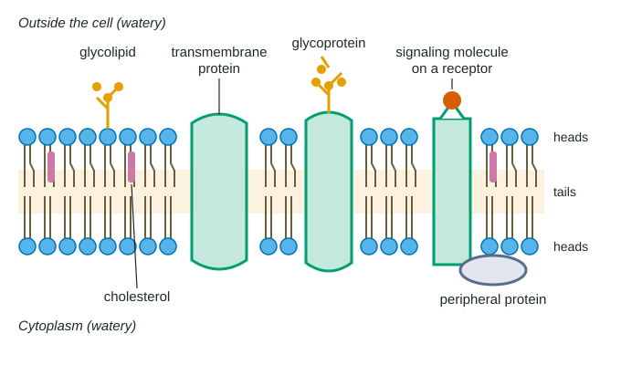

Every cell is wrapped in a plasma membrane, a film so thin (about 5 to 10 nm) that a light microscope cannot resolve it; only an electron microscope shows its two layers. It keeps the cell's contents in, lets the right things through, and carries the proteins that receive messages and identify the cell. This page shows how the membrane is built and why it behaves like a fluid.
The phospholipid bilayer
You met phospholipids in Unit 1. Each has a hydrophilic head (it contains a charged phosphate group) and two hydrophobic tails (fatty acid chains). Water is on both sides of a plasma membrane: the watery fluid outside the cell and the cytosol inside. So the phospholipids line up in two layers, a bilayer. The heads face the water on each side, and the tails point inward, meeting in the middle, where water is shut out.
Nothing glues the bilayer together with covalent bonds. It holds together because the hydrophobic tails crowd together away from water (hydrophobic interactions). That has an important side effect: individual phospholipids are free to slide sideways past their neighbors. A phospholipid can travel across a whole bacterial cell in about a second. What it almost never does is flip from one layer to the other, because that would drag its hydrophilic head through the hydrophobic middle.
The fluid mosaic model
Scientists describe the membrane with the fluid mosaic model (Figure 1). "Fluid" because lipids, and many proteins, slide sideways within the layer. "Mosaic" because the membrane is a patchwork of many different proteins set among the lipids, like tiles in a picture that can slide around.

The best-known evidence came from fusing cells. Researchers tagged a membrane protein of mouse cells with one color and the matching protein of human cells with another, then fused a mouse cell with a human cell. At first each color covered one half of the new cell. At 37 °C, within about 40 minutes the two colors had mixed over the whole surface in most cells. At 15 °C they barely mixed. The proteins were not being made fresh; existing proteins were moving through a fluid membrane, and moving more slowly in the cold.
Worked example: reading the fusion data. At 37 °C, 24% of fused cells were fully mixed at 10 minutes and 78% at 30 minutes. How fast did the share rise?
Step 1. Change in value: 78 − 24 = 54 percentage points.
Step 2. Change in time: 30 − 10 = 20 minutes.
Step 3. Rate = 54 ÷ 20 = 2.7 percentage points per minute. At 15 °C the share rose from 1% to 3% over the same interval, only 0.1 percentage points per minute, 27 times slower.
Membrane proteins
The lipids form the barrier; the proteins do most of the work. A typical plasma membrane is about half protein by mass.
Integral proteins are embedded in the bilayer. Many are transmembrane proteins that cross it completely. The stretch of a transmembrane protein that lies among the tails is made of amino acids with nonpolar side chains, which sit comfortably in the hydrophobic middle, while the parts that stick out on each side carry polar and charged side chains that face the water. Change a nonpolar amino acid in the buried stretch to a charged one, and the protein may no longer sit properly in the membrane.
Peripheral proteins are not embedded. They are attached loosely to one surface, often to the exposed parts of integral proteins. A gentle salt wash can remove them; integral proteins come out only if a detergent breaks up the bilayer itself.
| Component | Where it sits | Main job |
|---|---|---|
| Phospholipids | Two layers, heads out, tails in | Form the barrier and the fluid framework |
| Cholesterol (animal cells) | Among the tails, in both layers | Keeps fluidity within a working range |
| Integral and transmembrane proteins | Embedded in or crossing the bilayer | Move particular substances across; act as receptors; join cells |
| Peripheral proteins | Loosely attached to one surface | Enzymes; anchor the membrane to the cytoskeleton |
| Glycoproteins and glycolipids | Carbohydrate chains on the outer face | Cell recognition: identity tags other cells read |
Two jobs deserve a closer look. First, receptors. A signaling molecule, such as the hormone insulin, carries a message from one cell to another. If it is too large or too polar to get through the bilayer, it delivers its message by binding a receptor protein on the cell surface, which changes what happens inside the cell. A cell responds only if it makes the matching receptor, which is why one hormone can affect liver cells and ignore skin cells. (Unit 4 covers what happens after the signal binds.)
Second, cell recognition. Short carbohydrate chains attached to proteins (glycoproteins) and lipids (glycolipids) stick out from the outer surface. Their patterns differ between cell types and between individuals, and other cells read them. Your immune system uses such surface tags to tell your own cells from foreign ones.
Why do the chains face outward? They are attached inside the ER and Golgi, on the inner side of those membranes. When a vesicle from the Golgi fuses with the plasma membrane, its inner face becomes the outer face of the cell, so the chains end up outside.
Keeping the membrane fluid
A membrane must be fluid enough for its proteins to move and work, but not so fluid that it falls apart. Three things set its fluidity.
- Temperature. Warmer lipids move faster and pack more loosely, so fluidity rises. In the cold, tails pack tightly and the membrane stiffens, like butter in a fridge.
- Unsaturated fatty acids. A carbon-carbon double bond puts a kink in a tail. Kinked tails cannot line up closely, so a membrane rich in unsaturated tails stays fluid at lower temperatures.
- Cholesterol. In animal cells, cholesterol's rigid rings sit between phospholipids. When warm, they restrain the phospholipids' movement; when cold, they keep the tails from packing tightly. Cholesterol widens the range of temperatures over which the membrane works.
Many organisms adjust their membranes when the temperature changes. Bacteria grown in the cold build membranes with a higher share of unsaturated fatty acids, and those grown warm build more saturated ones. Measured at their own growth temperatures, their membranes come out about equally fluid.
Worked example: percent change. A bacterium's membrane has 68% unsaturated fatty acids when grown at 15 °C and 38% when grown at 43 °C. What is the percent change?
Percent change = (new − original) ÷ original × 100 = (38 − 68) ÷ 68 × 100 = −44%. The minus sign means a decrease: the warm-grown cells have 44% less unsaturated fatty acid, relative to the cold-grown ones.